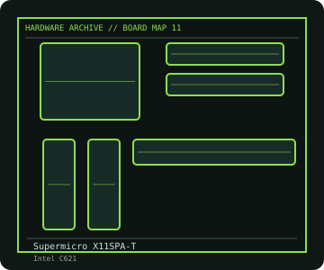

[ INDIVIDUAL COMPONENT // MOTHERBOARDS ]
Supermicro X11SPA-T
LGA3647/C621 workstation board with eight-channel ECC memory, seven PCIe slots and dual 10GbE. This entry identifies one product model; revision and firmware qualifications are stated below.

IDENTIFICATION: Check the PCB silkscreen, printed revision, assembly code, and firmware identifier on the actual board. Similar model names and PCB revisions may use different specifications or firmware.
Specifications
| Catalog subcategory | Workstation and server boards |
|---|---|
| Exact board / model | Supermicro X11SPA-T |
| Era / platform | Intel Xeon W-3200 workstation platform, 2019 |
| CPU and socket | One Intel Xeon W-3200 family LGA3647 processor; verify exact SKU and board BIOS from Supermicro's support matrix |
| Chipset / controller | Intel C621 |
| Memory | Eight DDR4 ECC DIMM slots, eight-channel, supporting registered or load-reduced modules as documented; CPU/model determines maximum capacity and speed |
| Expansion and connectivity | E-ATX; seven PCIe 3.0 x16 slots with lane assignment dependent on CPU; ten SATA 6 Gb/s, two M.2 sockets, dual 10-Gigabit Ethernet, BMC/IPMI, VGA, USB 3.x and onboard audio |
| Firmware | Supermicro BIOS and BMC firmware are independent. Use X11SPA-T-specific release notes and verify CPU support before upgrading or changing processors. |
Compatibility and revision notes
LGA3647 and its narrow socket loading mechanism require the CPU carrier and prescribed torque sequence. Xeon Scalable processors are not interchangeable with the Xeon W-3200 support family despite related socket appearance; slot lane count depends on processor.
Physical socket fit alone does not establish compatibility. Verify the exact processor support list, minimum BIOS, memory population rules, case dimensions, power connectors and shared-lane behavior in the cited model documentation before installation.
Preservation and repair
Inspect socket contacts using the correct carrier and torque procedure; protect the pin field whenever the CPU is removed. Check active chassis airflow, VRM temperatures and M.2 thermals. Document BMC firmware, network labels and BIOS configuration before board replacement.
For an archive record, photograph the PCB and labels before cleaning; note serial/date codes, BIOS/BMC versions, accessories, known faults, repairs, and test conditions. Use ESD-safe handling and never apply power with loose conductive hardware beneath the board.
Sources & further reading
- Supermicro — X11SPA-T product specificationsManufacturer model page for CPU, memory, expansion and I/O specifications.
- Supermicro — X11SPA-T support and manualsManufacturer documentation, BIOS/BMC updates and support resources.
Manufacturer model documentation is the primary reference; confirm the document revision and board markings when specifications vary by revision or SKU.